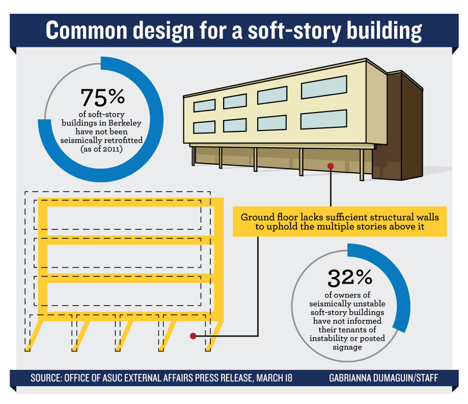

The Daily Californian
Graphic Design- Illustrator
In the summer of 2013, I started working as an infographic artist at The Daily Californian, UC Berkeley's only student-run news publication. Before starting, I actually had no idea how to use Illustrator; I only had experience with Photoshop (yes, I admit that I used to do all my graphic design work in Photoshop...)! I owe a big part of my Illustrator knowledge and experience to my time at the Daily Cal!
